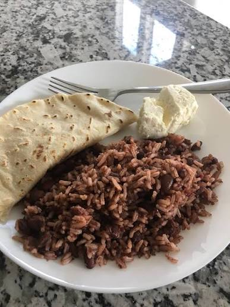
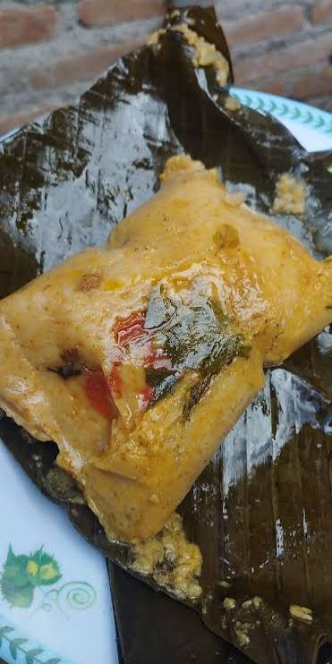
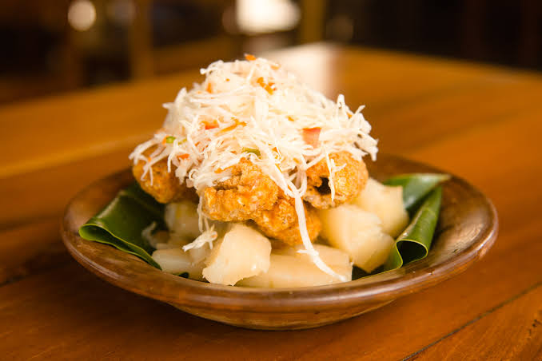
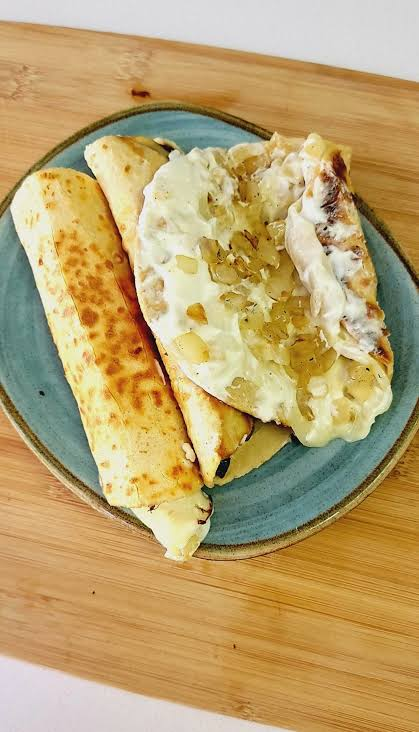
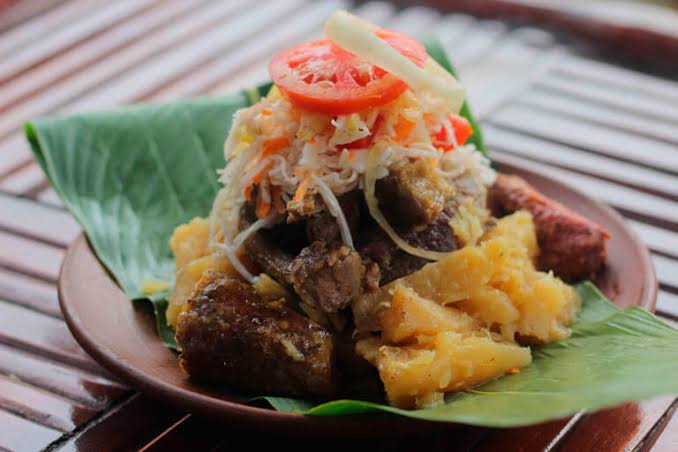
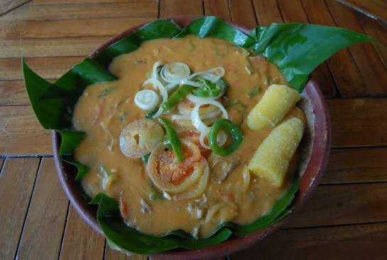

Gallo Pinto
Todo el paísEl sabor que nos une cada mañana: arroz y frijol criollo fritos con cebolla y chiltoma.
Sabores, tradiciones y saberes que dan vida a nuestra cultura. Descubrí la riqueza gastronómica de Nicaragua en cada territorio, desde sus raíces indígenas hasta sus influencias afrocaribeñas.
Platos tradicionales con identidad, historia y el auténtico sabor de Nicaragua.

El sabor que nos une cada mañana: arroz y frijol criollo fritos con cebolla y chiltoma.

Una tradición familiar dominical que trasciende generaciones en hoja de plátano.

Yuca cocida suave, chicharrón crujiente con carne y ensalada de repollo con mimbro.

El antojo callejero que enamora: tortilla caliente, queso trenzado, cebolla picada y crema.

Cocido al vapor de tradición afrocaribeña: carne de res cecinada, plátano maduro y yuca.

Un guiso con profunda historia y raíces indígenas: masa de maíz deshecha con carne mechada.

Sopa isleña con sabores del mar: pescado, mariscos, yuca, quequisque y leche de coco fresca.

Tortilla dulce tradicional de maíz tierno (choclo) servida con cuajada fresca y crema.
Reina de las sopas dominicales: toalla y pata de res con verduras campesinas, quequisque, elote y arroz.
El alma nocturna de los barrios nicaragüenses: carne asada al carbón, tajadas con queso frito y ensalada criolla.
La bebida emblemática de Nicaragua a base de maíz tostado y cacao.
Sabor ancestral del trópico nica con canela y vainilla.
Tradición indígena de maíz fermentado que sigue viva.
Refrescante y único con tortilla tostada y cacao fino.
Energía natural de nuestra gente con maíz cocido.
Infusión medicinal y refrescante con limón criollo y vainilla.

Un dulce con historia.
Yuca y queso con miel.

Bizcocho con licor.
Jocotes, papaya y mango.

Dulce de panela pura.

El sabor de Somoto.
Bizcochuelo bañado en leche y merengue.
Nuestra gastronomía nace de la tierra, del trabajo de nuestra gente y de una herencia que se mantiene viva en cada plato. El maíz es nuestra identidad, nuestra historia y nuestro futuro.
Conocer el origen →Cocineras tradicionales, comedores, mercados y emprendimientos locales.
Comida típica nicaragüense, vigorón auténtico y guisos campesinos recién hechos.
Sabores populares, nacatamales, cajetas y refrescos tradicionales en un solo lugar.

Platos típicos del occidente, indio viejo, chanfaina y sopas criollas los fines de semana.
Especialidad en rondón con mariscos frescos, pan de coco y patí recién horneado.

Decime tus gustos y te recomiendo los mejores lugares, platos y rutas gastronómicas en Nicaragua.